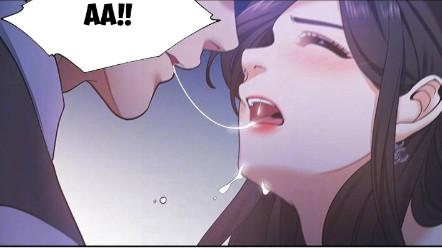
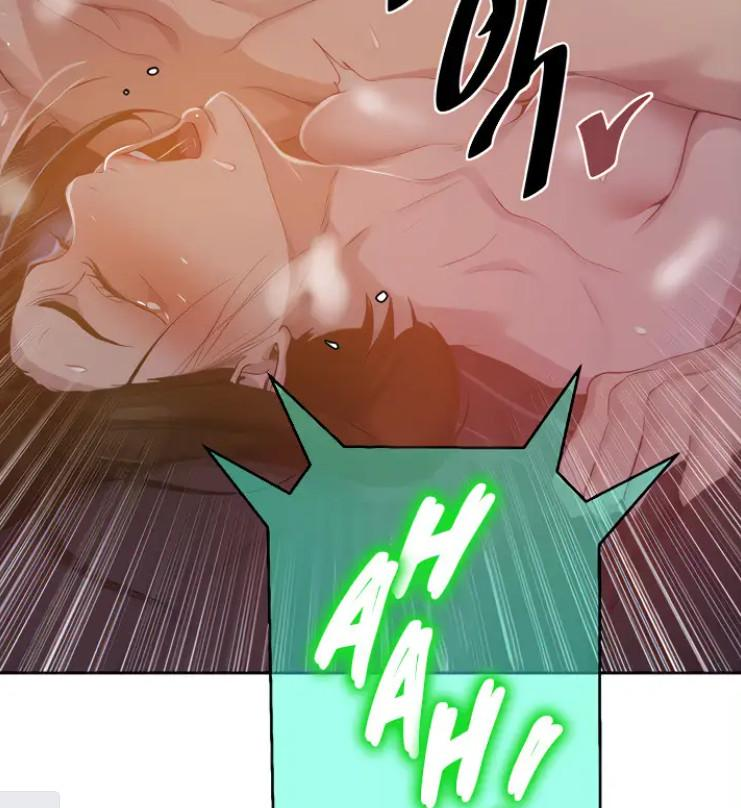

“Năm mới phát tài”… “Năm mới phát tài”…
Tại 1 bàn tiệc lớn, Thu và mọi người đang nâng ly trong bữa tiệc đầu năm, vài ngày qua mọi việc khá suôn sẻ, mọi người về nhà quây quần bên gia đình, về thăm cha mẹ, thầy cô, bạn bè. Đặc biệt là vợ chồng Thu về đón thằng Dương (con của Thành và Thu) cùng nó vui vẻ đi chơi hết mấy ngày tết.
Nhi: “Sao không để Dương ở cùng anh chị luôn sao cứ gửi nó bên nhà ông bà, em thấy nó ngoan mà, không được ở với ba mẹ em thấy sao sao á”
Thành nói đỡ: “Vì công việc, còn cái nhiệm vụ hệ thống của Thu nữa đó, lúc trước vợ chồng anh cũng sống cùng nhà với ông bà và con mà, thời gian gần đây nhiều việc quá nên tạm thời gửi đến khi nào ổn đã”
Tuấn: “Uhm, những việc này nói nguy hiểm thì cũng không nguy hiểm, nhưng mà cũng có nguy cơ”
Hương: “Em thấy hai vợ chồng anh chị đang hồi xuân muốn hưởng không gian riêng thì đúng hơn, cứ rước nó về, em lo ăn uống đưa rước cho, còn nếu cần không gian thì cứ cho nó qua bên phòng em ngủ nè”
Đạt “thằng bé còn nhỏ Hương ơi”
Hương: “Em thấy anh mới có vấn đề đó, cái gì cũng nghĩ bậy được”
Thu: “Thôi đợi xong mọi việc đã, còn chút thời gian ngắn nữa thôi, bên đó chị có cho A Ngũ, A Lục, A Thất theo dõi 24/24 rồi, không sao đâu, nào chúc mừng năm mới nè”
Cả nhóm đang ăn uống vui vẻ, Thu ra ngoài nhận 1 cuộc điện thoại xong thì thay đồ bảo mọi người chơi vui cô đi công việc. Cả đám ngỡ ngàng, Thành còn lên tiếng: “Mới đầu năm mà việc gì sớm vậy em”
Thu nhìn Thành: “Quan trọng”
Thành quay lại mọi người hô hào nâng ly để không để mọi người mất vui.
Thu hôm nay với mái tóc đen dài óng ả, đeo kính đen, giày cao gót, kèm là bộ váy ngắn với cổ khoét sâu cực kỳ quyến rũ. Rẽ vào làn cao tốc trên chiếc Ferrari màu vàng cô đạp ga lướt đi vun vút về hướng biển. Dừng lại ở khu Resort Queen, dám nhân viên lúp xúp chạy ra đón nàng.
“Dạ chào bà chủ” ” chào bà chủ”…
Thu tay đưa chìa khóa xe cho nhân viên miệng hỏi luôn: “Phòng mấy?”
Cô bé lễ tân xinh đẹp: “Dạ để em dẫn chị đi”
Thu quay qua: “Không cần, phòng mấy?”
“Dạ… em xin lỗi, khu VVIP phòng 09”
“Được rồi, đừng cho ai làm phiền chị”
Thu rảo bước nhanh có vẻ rất vội vã đi, vào đến phòng cô vội đóng cửa lại, trong phòng ông Minh dường như đã ở đây đợi cô rất lâu. Quăng vội chiếc túi xách lên bàn, Thu và ông Minh lao vào ôm hôn nhau cuồng nhiệt: “Anh đợi em lâu chưa”
Ông Minh: “Không lâu, gặp được em anh đợi bao lâu cũng được”
Vừa cởi từng chiếc cúc áo trên người ông Minh ra Thu vừa nói: “Nhớ em lắm hả, mới có mấy tuần mà… ưm… nhột anh”
Ông Minh vừa nói vừa kéo vai áo Thu xuống hôn lên ngực cô: “Cả mùa tết em ở với chồng vui vẻ, có nhớ đến anh đang cô đơn đâu”
Thu cởi áo ông Minh bỏ vội xuống đất rồi vuốt tay lên ngực ông, xoa lên bờ vai rộng, ôm vào tấm lưng ông hôn cuồng nhiệt: “Ưm… mm… đừng nói nữa… em ở đây rồi”
Vừa cởi đồ nhau vừa ôm, hôn, vừa đến thành giường thì họ đã không còn mặc gì, ông Minh ôm sát vào người Thu cho da thịt ông áp sát vào ngực cô cọ xát quấn vào nhau để thỏa nhớ mong, liên tục hôn mân mê nhau, lưỡi Thu quấn lấy lưỡi ông Minh, cô lại lật ông Minh nằm xuống đè lên người hôn siết, cứ thế họ lăn qua lại trên giường hòa huyện vào nhau.

Ông Minh: “Để anh thăm em bé nhỏ của em nào…”
Thu: “Ưmmm… không cần đâu, anh đút vô đi, em muốn lắm rồi… chốc xong em cho anh thăm thoải mái… ưmmm”
Ông minh chiều Thu nhấp nhẹ con cu vào lồn cô, thấy nó đã ướt nhẹp, ông đẩy sâu cu vào.
Thu: “Ớớ… ơ… đã quá anh ơi… hơ hơ… hơ… từ đã…”
Thu giữ như thế lại lật ông Minh nằm ngửa, cúi hôn liếm trên ngực ông, đá lưỡi dài trên ngực và núm vú nhỏ của ông Minh, rồi lại quay lên hôn môi, nút lưỡi, cô bắt đầu ưỡn người chuyển động phần hông, vừa nút lưỡi vừa nhấc nhẹ người lên rồi lại ấn xuống sâu vô… Những chuyển động cuồng nhiệt và đầy kỹ thuật của Thu cũng khiến ông Minh một người đàn ông chinh chiến bao trận trên giường cũng suýt xuất tinh ra mấy lần.
Thu cười rồi thì thầm bên tay ông: “Hiii… chịu nổi không… em tiếp nha”
Ông Minh: “Aaa… khoan… khoan đã cho anh vài giây”
Ông Minh lại lật Thu lại, đè lên người cô, không cho Thu lắc hông nữa, ông tay ghì lấy eo không cho cô chuyển động, tay kia bóp nâng cái vú tròn trịa săn chắc của Thu lên, ông lướt lưỡi lên nó, liếm không chừa 1 phần da nào trên cái vú bóng bẩy đó, rồi lượn lưỡi quanh đầu núm vú, ngậm mút chụt chụt… xong lại chuyển qua bầu vú còn lại mà bú mút.
Thu: “Ưmmmm… aaaaa… sướng quá… mút mạnh lên anh… ưmmmm aaa…”
Vừa rên xiết Thu vừa bấu vào vai ông, ôm lấy đầu ông Minh xoa vuốt xuống gáy mân lên tai ông. Để kích thích hơn nữa Thu ôm đầu ông Mình đè vào cú rồi ưỡn cặp vú phập phồng lên cho ông bú. Khi thấy ông Minh đã kiềm được cảm xúc cô lại đè ông nằm xuống, ngồi lên, tay khéo léo rút sợi dây thun buộc tóc đang ở cổ tay, ưỡn ngực ngồi lên đưa 2 tay vén tóc lên buộc cao tóc mình lên, buộc xong cô nhìn xuống ông Minh cười nhẹ rồi xoa 2 tay mình vào ngực nâng đôi vú lên lắc lắc khêu gợi, thấy ông Minh phì cười theo hành động của mình, Thu bắt đầu giữ phần trên trong tư thế đó, dùng lực chân nhóm người lên rút con cu ông Minh đến gần ra khỏi lồn thì nhấn xuống hết mức… hông Thu chuyển động liên tục đều đặn rút ra nhấn xuống như thế chậm nhưng mạnh mẽ và đầy kích thích.
Thu: “Ứ… ưm… ưm… ơ… ơ… ơ… sướng… a… a… a…”

Nước trong lồn Thu bắt đầu tràn ra đầy lên người ông Minh, Thu áp sát người xuống, cầm lấy vú đưa vào miệng ông Minh rồi chống 2 tay lên giường, lắc hông nhấp liên tục…
“Ư… ư… ơ… ư… ư… ơ… ư… ư… ơ… em… phê… quá… ư… ư… ơ… ư… ư… ơ… em nhớ… ư… nhớ anh lắm… ư… ư… ơ… nhớ con cu anh… ư… ư… nhớ cảm giác nó chà sát trong lồn em… ư u… ơ… ơ… em sướn… ưưư… g quá anh… ơi… ư… ư… ơ…”
Ông Minh ôm lấy vú Thu bú mút rồi chống tay ngồi dậy ôm sát vào người Thu, tay vòng ra ôm và nâng 2 mông cô hỗ trợ nhấp mạnh hơn. Vú Thu rung lắc đều trước mặt, lâu lâu còn trúng vào mặt ông như khiêu khích, thi thoảng ông há miệng ngậm được bầu vú mà mút chụt 1 phát trong khi vẫn nâng mông lên đụ liên tục.
Ông Minh: “Aaaa anh sắp ra… aaa… em làm anh sướng quá… anh sắp ra…”
Thu siết lấy vai ông Minh làm điểm tựa rồi đẩy mạnh hơn: “Ư… ư… ư… ra… ư… ư đi… ư ư… anh… em cũng ra… a… a… ra đây… AAAAA… AAAA… AA… aaaaa… a… a. Hơ hơ… ơ…”
Thu chậm dần lại theo từng cơn co thắt trong lồn, người cô giật giật, con cu ông Minh cũng theo nhịp đó à bắn từng đợt, từng đợt tinh trùng vào lồn cô, Thu hôn ôm ông Minh rồi đè ông nằm xuống, cô nằm lên ông thều thào:
“Ưmmm… em sướng quá…”
Ông Minh đợi vài giây rồi đỡ Thu nằm qua 1 bên, ông lấy khăn nhúng 1 phần cho ướt rồi lấy ra lau mình, lau cô bé của Thu và nằm xuống cạnh Thu, tay mân mân dọc theo cơ thể Thu trêu ghẹo.
Ông Minh: “Anh biết em chưa đủ mà… sao nay bỏ cuộc sớm vậy?”
Thu: “Hưuuu… không nữa đâu… em mệt… em chạy xe mấy trăm cây số đến đây là lao vào với anh luôn đó”
Ông Minh: “Hì… thì lên tới nghỉ ngơi, ai bảo lao vào làm gì”
Thu: “Em sợ anh đợi lâu, em sợ anh nhớ em… mà khi em vừa đóng cửa anh cũng có tha cho em đâu”
Ông Minh: “Thì anh nhớ thật mà… em đẹp nữa… anh mà cưới được em anh sẽ không rời em nửa bước”
Thu đưa tay khều khều thằng nhỏ của ông Minh vừa thích thú vừa nói: “Anh không rời hay thằng nhóc này không rời…”
Ông Minh cười: “Cả hai luôn… này em… anh muốn…”
Thu: “Sao ấp úng rồi… nói đi”
Ông Minh: “Em làm vợ anh nhé…”
Thu: “Aizzz… ai lại đi cầu hôn trên giường thế này…”
Ông Minh không nghĩ Thu đang đùa nên mừng rỡ bật dậy: “Em muốn thế nào, ở bãi biển, trước mọi người, hay là ra nước ngoài, em chọn đi, anh làm tất”
Thu: “Ơ… anh sao thế, em đã nói bao lần rồi, anh bỏ ý nghĩ đó đi”
Ông Minh: “Thành chồng em đẹp trai hơn anh thật đấy, nhưng ngoài ra có gì tốt, toàn dựa vào em đi lên, còn không biết quý và yêu thương em”
Thu ngồi dậy nghiêm túc: “Anh không được nói xấu chồng em, nếu anh ấy không phóng khoáng, thoải mái, em được đi gặp anh chắc, nếu là anh, anh có dám cho em sự tự do này không?”
Ông Minh: “Tại sao chứ, có em đẹp lại giỏi như vầy, tại sao phải chia sẻ cho người khác”
Thu: “Em có lý do của em, và cho dù không có lý do em cũng không muốn bị trói buộc, em đã sống trong khuôn phép nhiều năm rồi, làm vợ hiền con thảo chịu đủ áp lực rồi, em không muốn như vậy nữa, đúng em ích kỷ, em chỉ vì bản thân em, nhưng khi em chăm chỉ, cần mẫn, cả ngày chỉ lo cho gia đình, không chăm sóc bản thân, không trang điểm cho mình chỉ lo chồng con, lúc đó có ai quan tâm lo lắng, hay là khi em đẹp mọi người mới lo”
Thấy Thu gắt lên ông Minh liền hạ giọng: “Được rồi, được rồi, lâu mới được gặp anh không muốn tranh luận với em”
Cả 2 lại im lặng, Thu nghĩ lại câu nói của mình, rõ ràng khi cô xấu, cô không đẹp như bây giờ, Thành vẫn yêu thương cô, không ngoại tình, không đua đòi, anh vẫn cày chăm chỉ lo cho gia đình, đúng là anh có vài tính xấu dâm dục, nhưng nếu không có sự đồng ý của cô anh không bao giờ dám. Cho dù có hay không có hệ thống thì chồng cô trước nay vẫn như 1, chợt nhận ra cô đã thay đổi quá nhiều. Thu càng có lý do và quyết tâm hơn để hoàn thành nhiệm vụ cuối của hệ thống và chấm dứt việc này. Nhưng ông Minh thì sao, ông có lẽ đã rất yêu cô, hay là do điểm trung thành của hệ thống. Từ đã, chắc chắn rồi ông sẽ gặp nửa kia của mình ở đâu đó, như Đạt, Tuấn, Lâm hay Danh, họ dù có xảy ra chuyện gì rồi cũng về bên gia đình mình, vậy thì tìm 1 người nào đó cho ông, ông sẽ mau chóng quên cô.
Đang miên man suy nghĩ ông Minh lên tiếng làm cô quay lại:
Ông Minh: “Thu, đây này, anh có chuẩn bị 1 số hồ sơ em cần nè. Đây là toàn bộ thủ tục giấy tờ còn có tờ ghi chú những cái quan trọng khi thành lập công ty bất động sản, anh có 1 số bạn bè cũng đã giới thiệu cho em hết rồi, đến khi cần tìm nhân viên hay gì anh sẽ tìm phụ và hỗ trợ cho”
Thu: “Khoan đã, em cần cho anh xem cái này”
Thu lấy trong túi xách mình quyển sổ tay, cô đưa cho ông Minh đọc và cũng cùng xem rồi nói cụ thể từng giai đoạn hệ thống giải thích cho ông.
Minh vừa ngạc nhiên vừa nói: “Cái này là thật hả, trên đời có chuyện này hả? Vậy đây là lý do em quen anh?”
Thu: “Đúng là mục đích ban đầu như vậy, nhưng sau đó anh cũng biết mà”
Ông Minh không hỏi những việc khác mà chỉ quan tâm chuyện tình cảm: “Nhưng mà… nếu… nếu là như vậy thì tình cảm của anh là do hệ thống chứ không phải tình cảm thật của anh hả?”
Thu: “Ơi… ngốc à… anh không xem kỹ gì cả, đây ghi chú về điểm trung thành đây, nếu anh không có tình cảm thì điểm trung thành không cao đâu, bởi vì điểm anh rất cao, chỉ sau chồng em, nên em mới quý anh đó”
Ông Minh: “Sao anh lại thua Thành được nhỉ”
Thu phì cười: “Anh không quan tâm gì khác ngoài chuyện đó à ^^, em còn nghĩ khi em nói anh biết thì anh sẽ chỉ toàn hỏi về hệ thống, về tiền bạc chứ”
Ông Minh: “Anh sống bao năm rồi, đến khi vợ anh mất, anh mới biết trên đời không gì quý bằng tính mạng, sức khỏe và gia đình, lúc anh hối hận thì đã quá muộn, sai hơn là anh lao vào ăn chơi gái gú, rất may anh đã gặp em”
Thu: “Ơi… em miễn nhiễm thính rồi… câu nào của anh cũng đầy tình cảm hết, em không bị ảnh hưởng đâu”
Ông Minh: “Anh nói thật lòng, nhưng mà bây giờ anh cũng đã hiểu lý do của em, anh sẽ giúp em, nhưng mà sau khi kết thúc chuyện này thì chúng ta…”
Thu: “Em cũng không biết nữa, tới đó rồi tính… anh nói tiếp vụ em nhờ đi”
Ông Minh: “Anh hiểu vì sao em tìm hiểu vụ này rồi, anh chắc chắn đây là mục tiêu thứ 2 của em, đây: Đây là hồ sơ của tên Đức, hắn là anh ruột của Tài, sau vụ của Tài tuy im hơi lặng tiếng nhưng theo anh biết hắn là kẻ thù dai, hắn sẽ không bỏ qua cho em đâu. Có 1 vợ, 2 con, tiểu sử nổi bật, khá trong sạch, không có dính dáng tới làm ăn của em hắn.”
Thu: “Hoàn toàn trong sạch à, vậy sao hắn giàu thế”
Ông Minh: “Anh cũng không điều tra ra được, chỉ biết lúc trước hắn là công chức rất có uy tín, sau đó cưới vợ sinh con, cũng không lăng nhăng, đến khi vợ chồng hắn mở 1 tiệm vàng và đá quý thì trong vài tháng gia đình phất lên như diều gặp gió, tài sản hàng ngàn tỷ, tiền vàng của công ty vàng bạc đá quý hắn đứng top thế giới”
Thu: “Xem hình thì nhà cũng bình thường, không có bảo vệ, chỉ là viên chức nhà nước, nếu làm công ăn lương, lại liêm chính, sao giàu được nhỉ”
Ông Minh: “Chịu, nếu là anh chỉ buôn bán vàng bạc cũng không thể có tiến độ nhanh như thế, trừ phi…”
Thu: “Hả trừ phi gì…”
Ông Minh: “Anh cũng biết 1 người trong vài tháng phất lên nhanh như thế”
Thu: “Anh đừng úp mở nữa, kể em nghe đi”
Ông Minh: “Là em chứ ai… em nghĩ còn ai khác à, mà giờ anh đã hiểu em có hệ thống”
Lúc này cả 2 đều ngạc nhiên quay lại nhìn nhau đồng thanh: “Hệ Thống”
Thu lắc đầu: “Không, không thể như vậy được”
Ông Minh: “Không có gì là không thể cả, nếu em có thì đừng nghĩ là người khác không có, cứ tin là có mà cẩn thận đề phòng là được”
Thu: “Uhm thà cẩn thận còn hơn là ỷ y rồi mắc sai lầm, nếu hắn có Hệ Thống thật thì đúng là rất nguy hiểm đó, mà không biết của hắn có giống của em không, hắn giữ hay vợ hắn giữ”
Ông Minh: “Chỉ là suy đoán thôi, nhưng anh nghĩ nếu có cũng không giống, cái hệ thống của em dâm tà thế mà ^^”
Thu: “Uhm còn hắn lại khá trong sạch, hay chỉ là vẻ ngoài, hay là vì hắn đã hoàn thành tất cả rồi giấu nhẹm mọi thứ, quay về hoàn lương”
Ông Minh: “Thôi anh không đoán mò nữa đâu, nhức đầu lắm, tốt nhất tìm hiểu sâu thêm”
Thu: “Dạ, vậy nhanh nha, em cũng còn ít thời gian của nhiệm vụ cuối lắm, vậy đi”
Ông Minh: “Sao vậy, xong rồi hả, anh mới gặp em được có 1 lát mà…”
Thu ôm hôn ông rồi nói: “Hiiii… hôm khác em bù tiếp, chuyện này qua trọng, em cần bàn với mọi người, à… anh sắp xếp hôm nào lên nhà em, em giới thiệu với mọi người luôn, em có 1 đứa em đang ở trong nhà, tên Hương, xinh lắm, lên em giới thiệu cho anh”
Ông Minh: “Ok đi gặp mọi người thì anh đi, nhưng chuyện làm mai anh không cần đâu, vậy đi, em kêu nhân viên chở về, đừng đi xe 1 mình nữa”
Thu: “Dạ… em biết rồi”
Thu về luôn trong ngày, về đến nhà thì mọi người đang nửa mơ nửa tỉnh dậy sau 1 trận nhậu say be bét. Thu ra lệnh cho A Nhất và vài tên nữa, đưa họ vào phòng nghỉ, không thể bàn bạc gì trong tình trạng này rồi. Cô ghi chú tình hình cụ thể, thêm 1 số việc rồi để lại trên bàn, cho tài xế ở khu Resort tự về, đổi lấy xe chồng, rồi cùng A Nhất, A Nhị, A Tam, A Tứ đi luôn lên thành phố, tìm nhà trọ gần khu tên Đức sống rồi bắt đầu kế hoạch lắp đặt, theo dõi.
Ở đây vài ngày, Thu và A Nhất cũng không thể tìm hiểu thông tin nhiều thêm, tất cả vẫn như ông Minh nói, tên Đức này khá sạch sẽ. Trong phòng trọ nhỏ, cả nhóm đang ngồi quay thành 1 vòng tròn, nghe Thu giới thiệu ông Minh nói lại chi tiết công việc cô mấy ngày nay.
Thu: “Rồi, tất cả những cái trên là những gì em biết, không còn gì nữa”
Mọi người bắt đầu xem xét mọi thứ bàn tán. Hương cầm ảnh ông Đức trên tay: “Có tuổi mà tướng phong độ dữ, mà cổ ổng đeo sợi dây chuyền lạ nhỉ”
Nhi: “Đâu sao lạ?”
Hương: “Nè, bên trong dây chuyền là 1 chiếc nhẫn, nếu là nhẫn sao không đeo mà lại tròn vào dây chuyền”
Nhi: “Mốt giờ đó má, nhìu khi là nhẫn cưới không đeo mà tròng vào dây chuyền thôi”
Hương: “Không cái nhẫn nhìn đẹp và cổ xưa thế nào ấy, với tay hắn có đeo nhẫn cưới mà”
Thu: “Thôi đi 2 cô nương, kiếm cái gì có liên quan đi”
Ông Minh: “Anh có thêm 1 thông tin bên lề nè, em nhớ Ly chứ, thư ký cũ của anh đấy”
Thu cười: “Thư ký cũ hay bồ cũ”
Ông Minh: “Thôi… bỏ qua chi tiết đó đi, bây giờ Ly đang cặp với 1 đại gia khác, cũng nhất nhì của nước, hắn tên Phi, tên Phi này cũng đang định mở dự án lớn trong thành phố, cần sự phê duyệt của bộ, mà quan trọng nhất là thuyết phục phía bên tên Đức, sau khi thử mọi cách mua chuộc, hối lộ không được, hắn đang cho Ly tiếp cận câu dẫn ông Đức”
Thu tiếp lời: “Anh biết gì không, nếu là Ly thì em đoán 7 8 phần cô ta là 1 trong 3 mục tiêu nhiệm vụ của em luôn đó, vậy nên chắc chắn chuyện này có liên quan”
Ông Minh: “Nhưng mà theo anh biết, có khả năng Ly đã thất bại vài lần rồi”
Thành: “Ok, nghe nãy giờ cũng nắm kha khá rồi, vậy giờ gần như mục tiêu còn lại là ông Đức và Ly này là xong”
Thu: “Gần như là vậy”
Tuấn chen vào: “Nếu phía bên ông Phi đã dùng đủ thủ đoạn mà không được, vậy khả năng rất cao là ông Đức hoàn toàn trong sạch, mình đừng tự đưa ra kết luận hắn là người xấu khi hắn là anh ruột của tên Tài, biết đâu…”
Lan: “Đúng, nếu ông Đức không nhận hối lộ, không ham gái, vậy nếu dự án của mình hoàn toàn sạch, lại có lợi cho thành phố, cứ việc trình lên là hắn sẽ duyệt, không cần phải thông qua mua chuộc gì cả”
Đạt: “Nhưng cấn ở đây là dự án mang tên của Thu, hắn trong sạch nhưng lại ghi mối thù của em trai”
Hương: “Hay là đổi tên người khác, anh Thành chẳng hạn”
Thành: “Không được, nhiệm vụ là thành lập công ty của Thu, lừa người được nhưng không lừa hệ thống được”
Hương: “Aizzz sao khó chồng thêm khó thế… em nhức đầu quá”
Thu: “Vầy đi, cứ giữ dự án tên em, ngày mai Tuấn và Lan cùng lên sở trình xem biểu hiện hắn thế nào”
Thành: “Ok, vậy anh Minh theo dõi tiếp bên phía ông Phi coi có động tĩnh gì, Hương với Nhi dẫn theo A Ngũ theo sát Ly, Lan với Tuấn xem lại dự án, Thu và mọi người về khách sạn nghỉ ngơi đi, anh và Đạt sẽ ở phòng trọ xem bên này”.
Cả nhóm: “Quyết Định Vậy Đi”